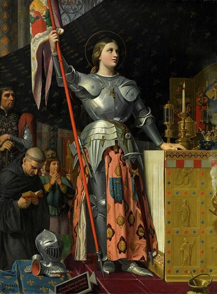

Banner of the Unburned Saint
They burned her at Rouen, and she refused to become what burning makes — so the fire kept the body and lost the argument.

Banner of the Unburned Saint
They burned her at Rouen, and she refused to become what burning makes — so the fire kept the body and lost the argument.
Feature map
Level-by-level features, as the figure refined them.
Raise the Standard
Bonus action · 1 CE · 1 minute · the banner manifests in your grasp.
Manifest the banner — the promise made visible. Willing creatures within 30 ft may swear a Vow of Conviction as a bonus action: a concrete duty (hold this ground, spare the surrendered, speak truth) plus a meaningful voluntary restriction, freely chosen. Resolve: once per round, a sworn creature making a d20 roll directly to keep its Vow adds your proficiency bonus to the roll after rolling. A voluntary violation ends the Vow, deals 2 × your PB psychic damage to the violator, and the creature cannot re-swear until it finishes a short rest. Forced movement and compulsion are not voluntary betrayal — Heaven knows the difference between the forced and the willing.
Martyr's Share
Reaction · 1 CE · once per round.
When a sworn ally would fail a d20 roll tied to its Vow, take unavoidable damage equal to 2 × your proficiency bonus — and the ally rerolls the failed roll. The wound is yours so the vow survives; that is the oldest logic you know. You cannot use this on yourself.
Voices at the Edge
1 CE · one creature per round.
When a sworn ally within 60 ft starts its turn Charmed, Frightened, or under a comparable non-incapacitating compulsion that conflicts with its Vow, spend 1 CE — the ally immediately repeats the save, hearing a girl's voice say hold. One creature per round.
Banner at Orléans
Passive · once per round.
Once per round, when a sworn ally succeeds on a meaningful Vow-tied roll, a different sworn ally within 60 ft may move up to 10 ft toward its own duty. This movement costs no movement and provokes no opportunity attack from one creature the moving ally can see. Victory is contagious under the banner.
No One Burns Alone
Reaction · once per long rest per ally.
When a sworn ally within 60 ft would drop to 0 HP from damage taken while directly upholding its Vow, you take half the post-mitigation damage — and the ally stays standing at 1 HP. Rouen, inverted. You cannot redirect damage that would kill you outright first.
Maximum, Domain, or equivalent.
Capstone material.
Raise the Banner Through Fire
Plant the standard and refuse to let it fall. The banner's radius extends to 60 ft, and it becomes unsuppressible by ordinary fear or morale effects. Each Vowed creature gains one Miracle for the duration: convert one failed d20 roll directly necessary to keep its Vow into a success (no critical; it cannot override the impossible). The Maximum ends early if you knowingly order a sworn creature to violate its Vow.
Orléans
The precise shape of what happened at Orléans: sometimes, rarely, and never at your choosing, the impossible simply succeeds — because someone swore it would. When a sworn creature would fail a d20 roll directly necessary to keep its Vow, convert the failure into a success. This is a Miracle granted without the Maximum, but the Maximum's law holds: no critical, and it cannot do the impossible.
Build-defining options.
This technique grants Innate Technique Feats — hand-authored applications of the figure's art, available in the builder's feat picker when you select this technique.